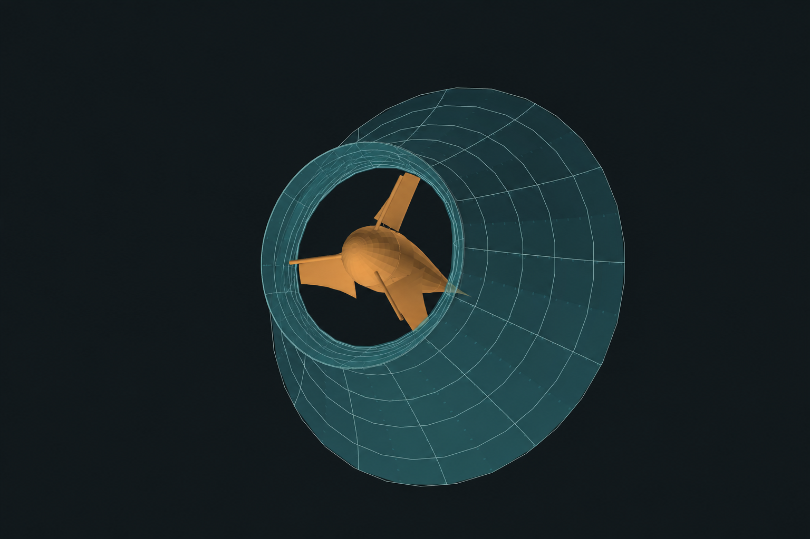

Pracownia energii wiatrowej Offgritt
Kulfon z Tubą
Kulfon z Tubą to rozwijany projekt turbiny wiatrowej. Projektujemy kanał powietrzny wokół trójłopatowego wirnika o średnicy 1,5 m, żeby zbadać pracę przy słabym wietrze.

Konstrukcja
Wirnik
i Tuba
Tuba jest kanałem przepływu powietrza otaczającym wirnik. Dokumentacja wirnika R35 opisuje skręcone łopaty, nos, ogon, podpory i prądnicę. Rolki przy nosie prowadzą wirnik bez centralnego wału.
Wzdłuż osi przepływu najpierw jest wlot, potem wirnik, a dalej rozszerzający się wylot. Od środka wirnika do czoła wlotu są około 24 cm, a do końca wylotu około 116 cm. Nos wystaje przed Tubę, ogon sięga za jej koniec.
W pakiecie PET 0,5 mm można prześledzić drogę części od płaskiego wykroju do formowania i połączenia. Ten pakiet ma własny bilans i nadal otwarty etap dopuszczenia do wykonania.
Słaby wiatr
Ile mocy niesie wiatr?
Przy tej samej powierzchni i gęstości powietrza wiatr o prędkości 3 m/s niesie jedną ósmą mocy wiatru o prędkości 6 m/s. Moc strugi rośnie z trzecią potęgą prędkości. Część tej mocy można odebrać na wirniku, a część traci się przy zamianie obrotu na prąd.
Małe turbiny mają próg rozpoczęcia wytwarzania energii elektrycznej. Nawet powyżej tego progu dostępna moc może być za mała dla wybranego odbiornika. Obrót wirnika sam w sobie nie wyznacza mocy elektrycznej.
Dla Kulfona istnieją obliczenia przy 3 m/s. W sprawdzonych wynikach moc elektryczna pod obciążeniem przy tej prędkości pozostaje niepotwierdzona.
Pojedynczy Kulfon z Tubą
Wiatr w ruchu.
Schemat pokazuje kierunek napływu powietrza przez urządzenie.
Schemat pokazuje kierunek napływu wiatru przez wlot, wirnik i dalej wylot. To ilustracja zasady działania, nie symulacja przepływu ani pomiar.
Wizualizacja wygenerowana na podstawie geometrii projektu. Pokazuje koncepcję rozmieszczenia wirników.
Symulacja przepływu (CFD) · R16
Próby wirnika i kanału
W czterech konfiguracjach badawczych obliczono moc na wale przy wietrze 3 m/s i prędkości wirnika 20 rad/s. Najwyższą wartość w tej serii uzyskano dla wirnika z kanałem.
Etap projektu
Przed próbami i sprzedażą
Trwa integracja projektu i sprawdzanie sposobu wykonania części. Dopuszczenie do wykonania oraz próby formowania pozostają otwarte.
Do oceny pracy przy 3 m/s potrzebny jest pomiar prędkości wiatru i mocy elektrycznej pod określonym obciążeniem podczas tej samej próby.
Na tym etapie Kulfon nie jest dostępny w sprzedaży. Kanał zgłoszeń o dokumentację, części i wspólne próby nie jest jeszcze uruchomiony.